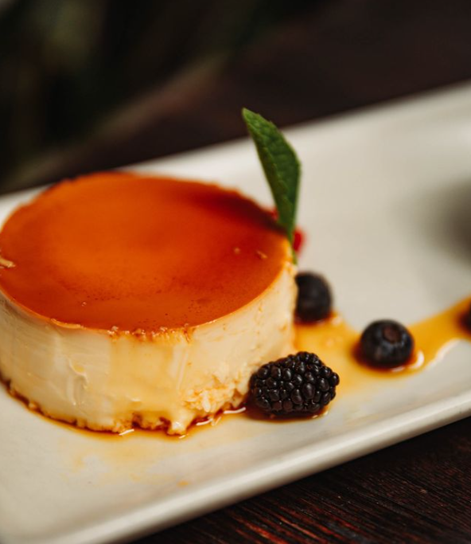

Ingredients
- 10 pieces eggs
- 1 can condensed milk (14 oz)
- 1 cup fresh milk or evaporated milk
- 1 cup granulated sugar
- 1 teaspoon vanilla extract
Instructions
- Step 1: Separate the yolk from the egg whites, using only the yolks.
- Step 2: Place the egg yolks in a large bowl and beat them with a fork or egg beater.
- Step 3: Add the condensed milk and mix thoroughly.
- Step 4: Pour in the fresh milk and vanilla extract, then mix well.
- Step 5: Heat the mold (llanera) on low heat and add the granulated sugar.
- Step 6: Stir the sugar in the mold until it turns into a light brown caramel.
- Step 7: Spread the caramel evenly on the flat surface of the mold and let it sit for 5 minutes.
- Step 8: Pour the egg yolk and milk mixture over the caramel in the mold.
- Step 9: Cover the mold with aluminum foil.
- Step 10: Steam the mold with the mixture for 30 to 35 minutes.
- Step 11: Allow it to cool, then refrigerate.
- Step 12: Serve as dessert and enjoy!
